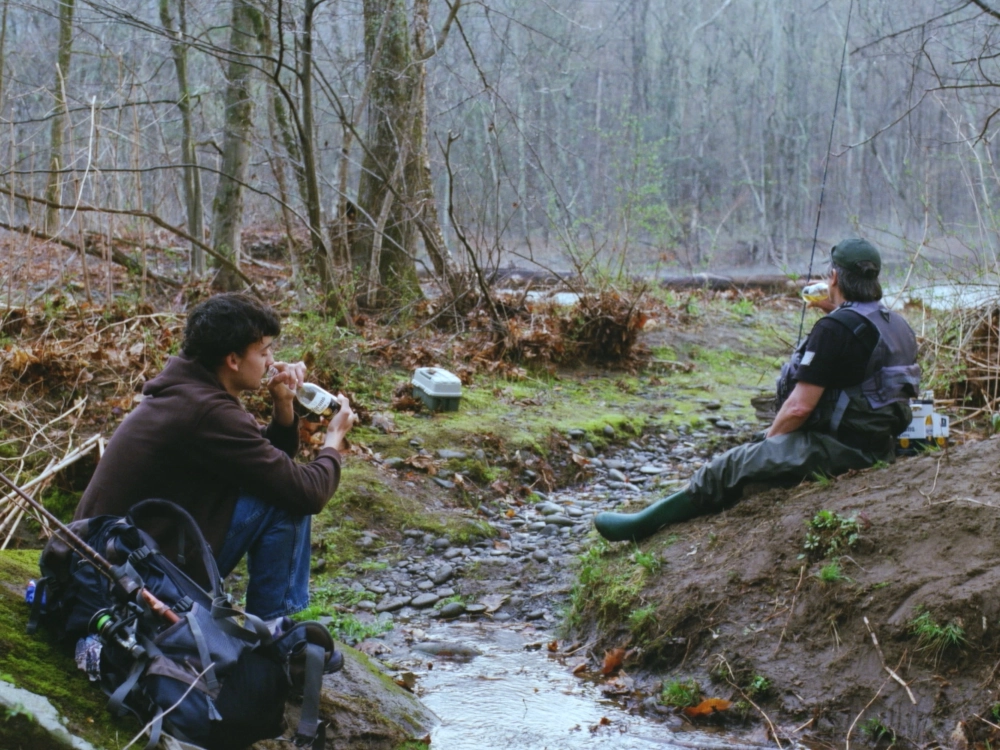

CLASSIC WATER (2025)
CAST:
Hank Johnstone as "Rowan"
Rodney Koebele as "John"
CREW:
Writer/Director: Matthew Koebele
Executive Producers: Mas Bouzidi & Cate Christiansen
Producer: Eloy Correia
Associate Producer: Connor Keep
Director of Photography: Connor Keep
Assistant Cameras: Tim Moon & Chris Comfort
Location Sound: John Keville
Editor: Case Avron
Shot on Kodak 500T and 250D 35mm.